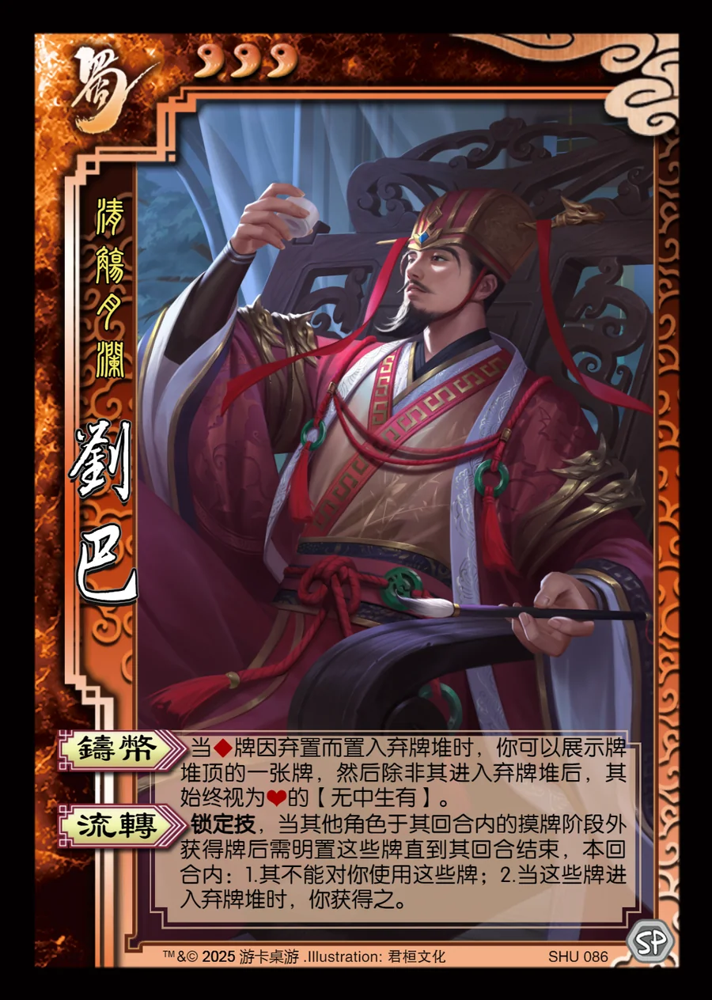

点击卡面查看大图
蜀
刘巴
♥3清觞月澜
铸币
当♦牌因弃置而置入弃牌堆时，你可以展示牌堆顶的一张牌，然后除非其进入弃牌堆后，其始终视为♥的【无中生有】。
流转锁定技
锁定技，当其他角色于其回合内的摸牌阶段外获得牌后需明置这些牌直到其回合结束，本回合内：1.其不能对你使用这些牌；2.当这些牌进入弃牌堆时，你获得之。

点击卡面查看大图
清觞月澜
当♦牌因弃置而置入弃牌堆时，你可以展示牌堆顶的一张牌，然后除非其进入弃牌堆后，其始终视为♥的【无中生有】。
锁定技，当其他角色于其回合内的摸牌阶段外获得牌后需明置这些牌直到其回合结束，本回合内：1.其不能对你使用这些牌；2.当这些牌进入弃牌堆时，你获得之。